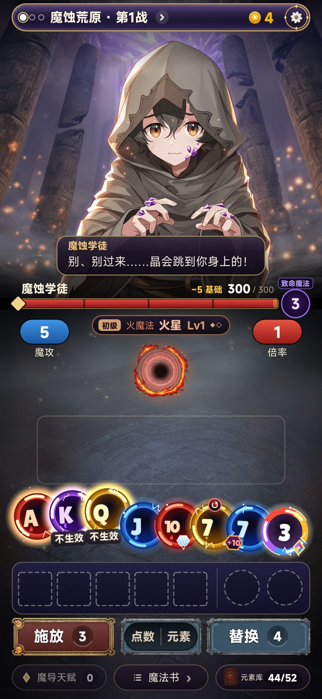
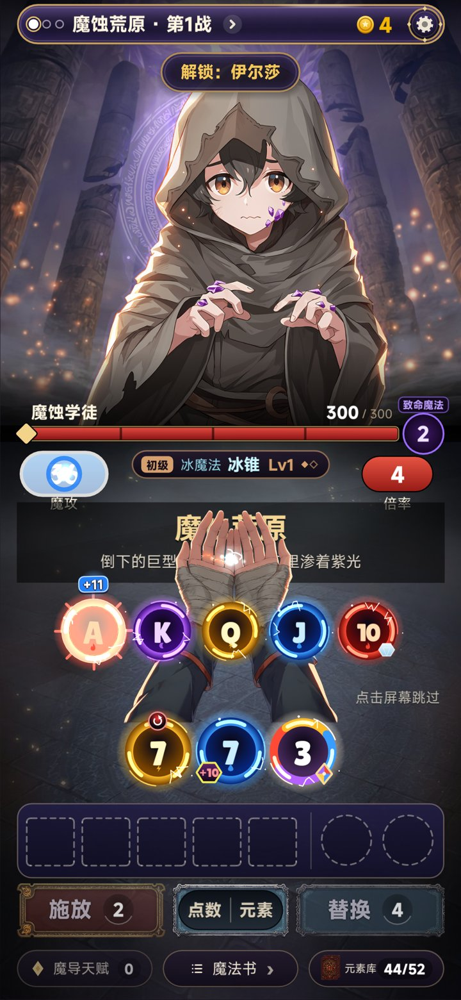
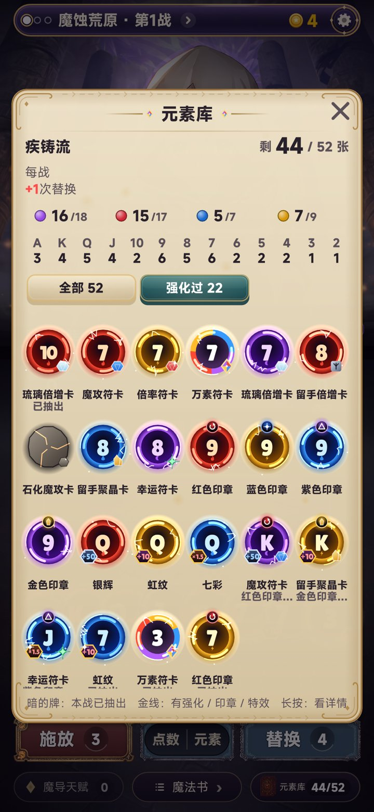
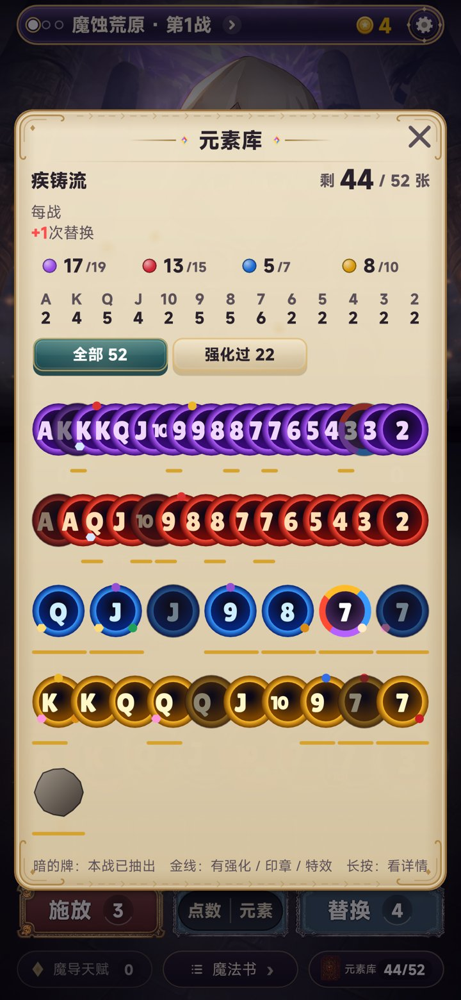
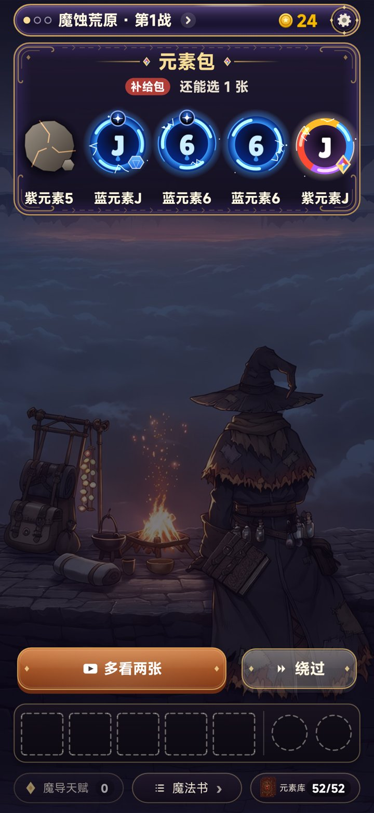
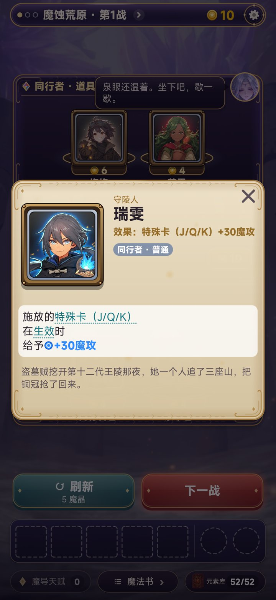
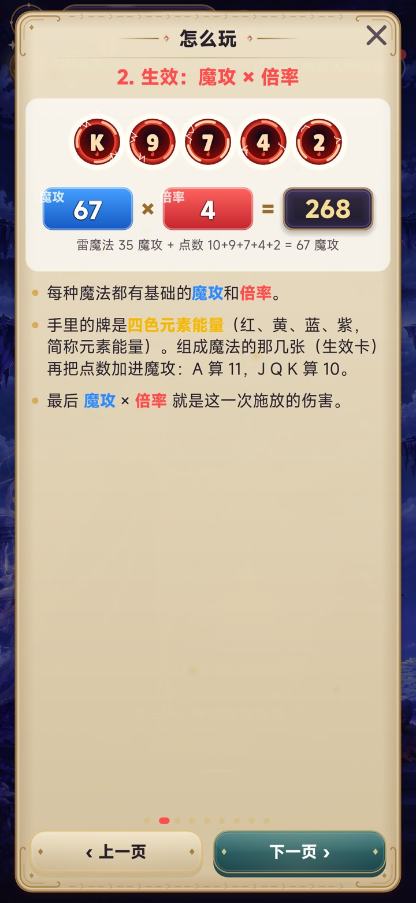
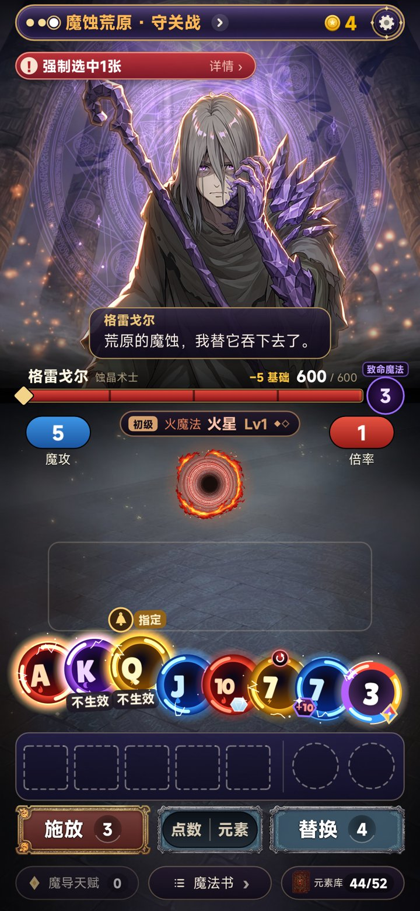
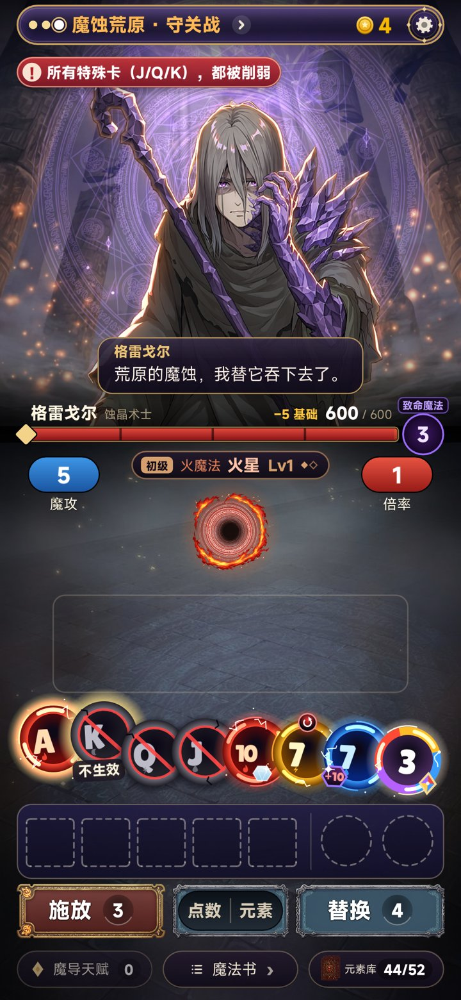

手搓魔法 · 四色元素能量 实机截图（无头渲染 1080×2340）
手牌：四色元素能量，J/Q/K 与数字牌一致，选中 3 张（更亮、转得更快）
施放计分瞬间：能量爆发 + 光环扩散
全部强化 / 印章 / 特效标志（元素库「强化过」）
元素库全览：52 张
元素包：石化魔攻卡 / 印章 / 万素符卡
同行者说明：特殊卡（J/Q/K）
怎么玩：四色元素能量
守关者指定牌（金铃「指定」）
特殊卡被削弱时